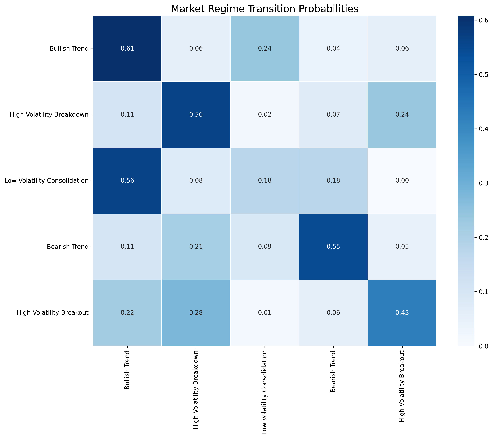
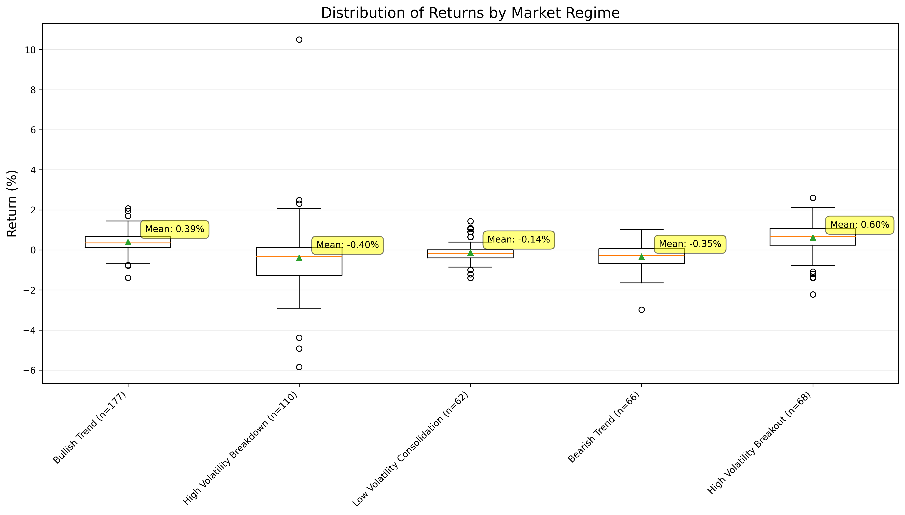

Visualization Gallery
Comprehensive visual analysis of market regimes and network dynamics

Market Regimes Showcase
Complete overview of the five identified market regimes with their characteristic patterns and technical indicator states.

Price Chart with Regime Overlay
Stock price movements with color-coded regime classifications, showing how the network identifies distinct market states over time.

Regime Transition Heatmap
Probability matrix showing transition patterns between different market regimes, revealing the dynamics of market state changes.

Return Distributions by Regime
Statistical analysis of return distributions within each market regime, demonstrating the distinct risk-return profiles.

Encoded Feature Patterns
Binary encoding of technical indicators for each regime, showing the pattern structure stored in the Hopfield network memory.